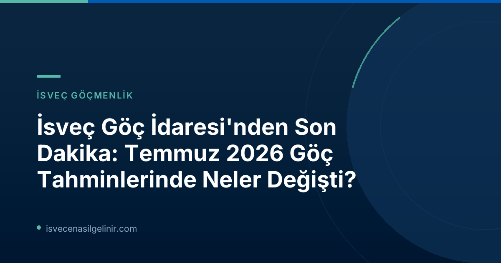

Migrationsverket'in Temmuz 2026 raporu, İsveç'in göçmenlik ve iltica politikalarında geleceğe yönelik önemli sinyaller veriyor. Özellikle Ukrayna'da devam eden savaş ve AB düzeyinde alınan yeni kararlar, İsveç'in göçmenlik akışlarını doğrudan etkiliyor. Bu güncellemeler, İsveç'te yaşayan veya yaşamayı planlayan pek çok kişi için hayati önem taşıyor.
Migrationsverket'ten Temmuz 2026 Güncellemesi: Genel Bakış
Migrationsverket'in Temmuz prognosu, genel olarak Nisan 2026 raporuna kıyasla az sayıda ancak stratejik öneme sahip ayarlamalar içeriyor. En dikkat çekici değişiklik, Avrupa Birliği'nin Ukraynalılar için toplu kaçış direktifi kapsamında sağladığı geçici koruma kararının, AB Komisyonu'nun önerisi doğrultusunda Mart 2028'e kadar uzatılacağı varsayımıdır. Bu durum, önceki prognosta direktifin Mart 2027'de sona ereceği varsayımından önemli bir sapma teşkil ediyor.
Planlama Direktörü Eric Ramstedt, "Her ne kadar henüz kesin bir karar alınmasa da, prognos Ukraynalılar için geçici korumanın yeniden uzatılacağı varsayımına dayanmaktadır," açıklamasında bulundu.
Ayrıca, Haziran 2026'da yürürlüğe giren AB Göç ve İltica Paktı ile uluslararası koruma süreçlerinde (eski adıyla iltica) kapsamlı değişiklikler ve yeni tanımlamalar getirildi. Ancak Migrationsverket, istatistiksel veriler oturana kadar prognoslarında eski tanımları kullanmaya devam edeceğini belirtti.
Ukraynalılar İçin Geçici Koruma Statüsünde Önemli Değişiklikler
Ukrayna'daki savaştan kaçan kişilere sağlanan geçici koruma statüsü, AB Komisyonu'nun teklifiyle 4 Mart 2028'e kadar uzatılması bekleniyor. Bu beklenti doğrultusunda, Migrationsverket, Ukraynalılar için geçici koruma başvurularının sayısını yukarı yönlü revize etti.
Ukrayna'dan Gelen Sığınmacılar İçin Tahminler
| Yıl | Durum Tespiti | Önceki Tahmin (Nisan 2026) | Temmuz 2026 Tahmini |
|---|---|---|---|
| 2026 | Ukrayna'dan gelen koruma arayanlar (Birincil Senaryo) | 9.000 | 10.000 |
| 2027 | Ukrayna'dan gelen koruma arayanlar | Bilinmiyor | ~10.000 (Büyük belirsizlik var) |
2026 yılı için beklentiler, şimdiye kadar beklenenden daha fazla Ukraynalının İsveç'e gelmesi nedeniyle artırıldı. 2027 yılı içinse, geçici korumanın uzatılmasına bağlı olarak yine 10.000 civarında başvuru bekleniyor, ancak uzatmanın tam şekli henüz kararlaştırılmadığı için bu sayıya ilişkin belirsizlik yüksek.
Uluslararası Koruma (İltica) Başvurularında Son Durum
Uluslararası koruma (iltica) başvurularının sayısındaki düşüş eğilimi devam ediyor. Migrationsverket'in prognosu, hem AB genelinde daha az iltica başvurusu olmasını hem de İsveç'in kendi yasalarının iltica başvuru sahipleri için ülkeyi daha az çekici hale getirmesini bu düşüşün nedenleri olarak gösteriyor.
Eric Ramstedt, "Bu durum hem AB'ye gelen ilticacı sayısının azalmasından hem de İsveç'in yasal düzenlemelerinin ilticacılar için İsveç'i daha az cazip hale getirmesinden kaynaklanıyor," dedi.
Uluslararası Koruma Başvurularının Sayısal Verileri
| Yıl | Kategori | Önceki Tahmin (Nisan 2026) | Temmuz 2026 Tahmini |
|---|---|---|---|
| 2026 | İltica, ilk başvurular | 5.000 | 4.200 |
| 2026 | İltica, uzatma başvuruları | 17.000 | 17.000 |
İsveç Çalışma İzinleri: Gelecek Yıllara Dair Beklentiler
İsveç'te ilk kez çalışma izni başvurusunda bulunacak kişilerin sayısının 2027'de düşmesi, ancak 2028'de "Belirgin" bir artış göstermesi bekleniyor. Bu önemli artışın temel nedeni, Ukraynalılara sunulan Geçici Koruma Direktifi'nin sona ermesinden sonra, bu kişilerin daha düşük ücret şartlarına tabi olarak çalışma iznine başvuracak olmalarıdır. İsveç'te çalışma hayatına atılmak isteyenler için bu dinamiklerin takip edilmesi büyük önem taşımaktadır.
Bilgi Kutusu: Çalışma İzni Şartları
İsveç'te çalışma izni başvuru süreçleri ve güncel gereklilikler hakkında detaylı bilgi almak için Migrationsverket'in resmi kanallarını ve ilgili yasal düzenlemeleri incelemeniz tavsiye edilir. Özellikle sverigemedborgarskapsprov.com gibi bilgilendirici platformlar, entegrasyon süreçlerine dair önemli içerikler sunmaktadır.
Çalışma İzni Başvurularında Gelişmeler
| Yıl | Kategori | Önceki Tahmin (Nisan 2026) | Temmuz 2026 Tahmini |
|---|---|---|---|
| 2026 | Çalışma izni (ilk ve uzatma) | 70.000 | 70.000 |
| 2027 | Çalışma izni (ilk başvurular) | Bilinmiyor | Düşüş bekleniyor |
| 2028 | Çalışma izni (ilk başvurular) | Bilinmiyor | Belirgin artış bekleniyor |
İsveç Vatandaşlığı Başvurularına Yeni Yasaların Etkisi
6 Haziran 2026'da yürürlüğe giren yeni yasa, vatandaşlık başvuruları üzerinde önemli bir etki yaratacak. Migrationsverket, hem gelen hem de karara bağlanan vatandaşlık başvuru sayılarında bir düşüş tahmin ediyor. Ancak bu etkinin uzun vadede ne kadar büyük olacağına dair belirsizlik devam ediyor. İsveç vatandaşlık testine hazırlık ve başvuru süreçleri hakkında güncel bilgilere ulaşmak için sitemizdeki makaleleri takip edebilirsiniz.
Vatandaşlık Başvuruları ve Yeni Kanunlar
| Yıl | Kategori | Önceki Tahmin (Nisan 2026) | Temmuz 2026 Tahmini |
|---|---|---|---|
| 2026 | Vatandaşlık başvuruları | 60.000 | 48.000 |
Geri Dönüş ve Sınır Dışı Kararlarındaki Değişimler
İltica başvuru sayılarının düşmesiyle birlikte, başvuruları reddedilen kişilerin geri dönüş sayısı da azalıyor. Bu nedenle, Migrationsverket'in prognosu, tüm tahmin dönemi boyunca iltica ile ilgili geri dönüşlerde bir düşüş öngörüyor. Yıl içinde gerçekleşen ülke dışına çıkışların beklenenden düşük olmasında, Orta Doğu'daki savaş ve Migrationsverket'in bazı genç yetişkinlerle ilgili sınır dışı kararlarını ertelemesi gibi faktörler etkili oldu. 2026 ve 2027 yılları için gönüllü geri dönüş tahminleri, her iki yıl için de 200 kişi azaltıldı.
Geri Dönüş ve Sınır Dışı Verileri
| Yıl | Kategori | Önceki Tahmin (Nisan 2026) | Temmuz 2026 Tahmini |
|---|---|---|---|
| 2026 | Gönüllü geri dönüş (total) | Belirtilmemiş | 200 düşüş |
| 2027 | Gönüllü geri dönüş (total) | Belirtilmemiş | 200 düşüş |
Temmuz 2026 Migrationsverket Prognosunun Detaylı Bilgileri
Migrationsverket'in Temmuz 2026 için yayınladığı ana senaryo tahminlerinin özetini aşağıdaki tabloda bulabilirsiniz. Parantez içindeki rakamlar, Nisan 2026 tahminleriyle kıyaslamayı göstermektedir.
| Kategori | 2026 Tahmini (Temmuz) | Nisan 2026 Tahmini (Kıyaslama) | Değişim (Temmuz vs Nisan) |
|---|---|---|---|
| Ukrayna'dan koruma arayanlar (Ana Senaryo) | 10.000 | 9.000 | +1.000 |
| Asyl, ilk başvurular | 4.200 | 5.000 | -800 |
| Asyl, uzatma başvuruları | 17.000 | 17.000 | Değişiklik yok |
| Öğrenci işleri (ilk ve uzatma) | 31.000 | 30.000 | +1.000 |
| Aile birleşimi işleri (ilk ve uzatma) | 59.000 | 61.000 / 59.000 | -2.000 (maksimum) |
| Çalışma pazarı işleri (ilk ve uzatma) | 70.000 | 70.000 | Değişiklik yok |
| Vatandaşlık işleri | 48.000 | 60.000 | -12.000 |
Bu güncel bilgiler, İsveç'teki göçmenlik durumunu anlamak ve geleceğe yönelik planlar yapmak için önemli birer kılavuz niteliğindedir. Gelişmeler oldukça sitemiz üzerinden bilgilendirmeye devam edeceğiz.
Referanslar
İsveç'e Yolculuğunuzda Yanınızdayız!
İsveç'e taşınma, yaşama ve vatandaşlık süreçleri hakkında daha fazla bilgiye mi ihtiyacınız var? Uzmanlarımızdan rehberlik alın ve İsveç hayallerinize bir adım daha yaklaşın.